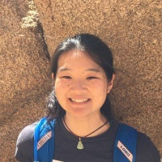

Stephanie Tsuei
PhD Student
I am a graduate student in UCLA's Vision Lab interested in making both classical and machine learning-based computer vision safer and more suitable for safety-critical autonomous systems. My advisors are Stefano Soatto and Paulo Tabuada. Previously, I studied mechanical engineering and control theory at Caltech. I also worked as a controls engineer and researcher for several years at Northrop Grumman.